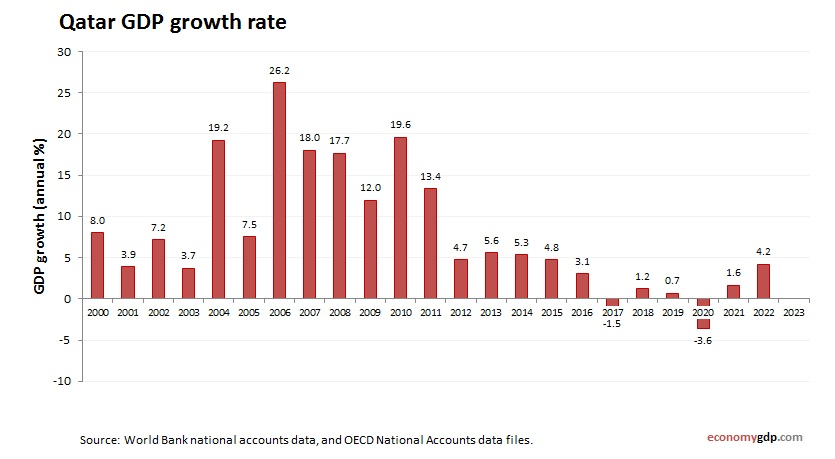

Arabie Saoudite

'Arabie saoudite est engagée dans une transformation économique sans précédent sous l'impulsion de la Vision 2030, lancée sous le patronage du roi Salmane et portée par le prince héritier Mohammed ben Salmane
Cette vision vise à diversifier l'économie, réduire la dépendance aux hydrocarbures et positionner le royaume comme un hub mondial de l'innovation et des affaire
Forces
Fonds Public d'Investissement (PIF) : 925 milliards de dollars d'actifs, l'un des plus puissants fonds souverains au monde
Capacité à investir massivement dans les secteurs stratégiques (tech, industrie, tourisme)
🤖 2. L'IA et les données comme priorité nationale L'Arabie saoudite a fait de l'intelligence artificielle un pilier fondamental de sa transformation :
⚽ RAYONNEMENT SPORTIF • Coupe du Monde 2034 • Marché du sport : 32 Mds SAR (→80 Mds) • 70% événements opérés par talents locaux
Faiblesses
Dépendance au pétrole
Seuil d'équilibre budgétaire : 90-110 $/baril
Dette en hausse rapide : La dette du gouvernement est passée de 21,3% du PIB en 2022 à 31,6% en 2025, et devrait atteindre 37,3% en 2027
Qatar

Le Qatar est l'un des pays les plus riches du monde grâce à ses immenses réserves de gaz naturel. Son fonds souverain, la Qatar Investment Authority (QIA) , est un acteur incontournable de la finance mondiale.
Forces
Le Qatar possède les troisièmes réserves mondiales de gaz naturel, derrière la Russie et l'Iran, avec lesquelles il partage le plus grand champ gazier du monde (North Field)
Le Qatar accélère massivement sa stratégie d'investissement dans les technologies de pointe.
Objectif : faire de Doha un hub régional pour l'expertise en capital-risque
Faiblesses:
Malgré les efforts de diversification, l'économie qatarie reste totalement dépendante des hydrocarbures:
Très exposé aux fluctuations des prix du gaz
Contrairement à ses voisins saoudien et émirati, le Qatar n'a pas connu de boom des introductions en bourse (IPO) ces dernières années
Marché moins attractif que Dubaï ou Riyad pour les levées de fonds